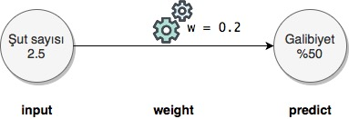
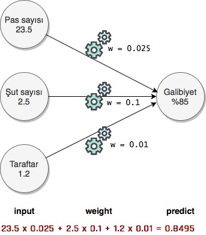
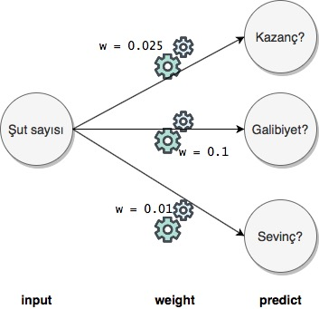
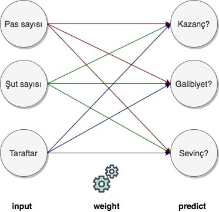

1. Tahmin Etme, Forward Propagation
Kayıt Tarihi:
Son Güncelleme:
Bu derste bir program ile bir sorunun cevabının nasıl tahmin edildiği açıklanıyor. Bu işlem son derece basit aslında; tahmin işlemi dediğimiz işlem sadece girişi verisini belirli bir sayı ile çarpmaktan ibaret.
Anahtar Kelimeler: forward propagation · input · output · prediction · tahmin · weightÖncelikle makinenin nasıl tahmin ürettiğini açıklayacağım. Farz edelim ki bir futbol takımının (mesela Antalyaspor) önceki maçlarına ait bilgileri kullanarak belirli bir maçı kazanıp kazanamayacağının tahminini yapmaya çalışıyoruz, basitlik açısından sadece kazanmak ve kaybetmek durumlarının olduğunu kabul edelim, beraberlik yok. Şimdi sadece tahmin olayını açıkladığımız için biz (insan olarak) önceki maçların bilgilerini analiz ettiğimizi ve öğrenme aşamasını tamamladığımızı düşünelim. Bu analiz sonucunda şöyle bir çıkarımda bulunduk mesela: takımın attığı şut sayısı maçı kazanma durumunu yüksek derecede etkiliyor! Örneğin takımımız 1 şut attığı maçların çok azını kazanmış, 5 ila 10 şut attığı maçların bazılarını kazanmış, 10-20 şut attığı maçların çoğunu kazanmış ve daha fazla şut attığı maçların hepsini kazanmış.
Şu aşamada tahminimizi sadece şut sayısına göre şekillendiriyoruz, bir maçta takımımızın kaç şut attığına bakarak maçı kazanıp kazanamadığını tahmin edeceğiz. Şut sayısının tahminimini etkileme oranına ağırlık katsayısı (weight) diyoruz. Tahmini de şöyle yapıyoruz; şut sayısını input olarak alıyoruz ve bu sayıyı weight ile çarpıp bir output üretiyoruz. Bu output değeri bu maçı kazanma ihtimalimizi belirten bir sayı; ne kadar büyük ise o kadar yüksek ihtimal. 
Söylediğim gibi tahmin yapmak olarak belirttiğimiz şey sadece şut sayısını weight ile çarpmak, oldukça basit ama mantıklı! Aşağıdaki basit program bu tahmini yapabilir. Şut sayısının tahmini etkileme katsayısı (weight) 0.2 olsun.
weight = 0.2
def neural_network(input, weight):
prediction = input*weight
return prediction
number_of_shots = [2.5, 7.5, 10.0, 3.5] #farkli maclardaki ortalama sut sayiları
input = number_of_shots[0] #ilk mac icin tahmin yapacagiz
pred = neural_network(input, weight) #tahmin
print(pred)
>>> 0.5
Yukarıda yazdığınız fonksiyon bir sinir ağı (neural network) olarak adlandırılır, görüp görebileceğiniz en basit sinir ağı budur fakat hepsinin mantığı aynıdır.
Şimdi tahmin mekanizmasını biraz geliştirelim, mesela sadece şut değil atılan başarılı pas sayısı ve maçı izleyen seyirci sayısı da tahminimizi etkilesin. Bunların weight değerleri 0.025 (pas), 0.1 (şut) ve 0.01 (seyirci) olsun. Bu durumda her bir input (pas, şut ve seyirci) değerini kendi weight değeri ile çarpıp toplayacağız. 
weights = [0.025, 0.1, 0.01]
def neural_network(input, weights):
pred = w_sum(input, weights)
return pred
def w_sum(a, b):
assert(len(a) == len(b))
output = 0
for i in range(len(a)):
output += a[i]*b[i]
return output
passes = [23.5, 39.25, 10.9, 40.8]
shots = [2.5, 7.5, 10.0, 3.5]
fans = [1.2, 1.3, 0.5, 1.0] #x10K
input = [passes[0], shots[0], fans[0]]
pred = neural_network(input, weights)
print(pred)
>>> 0.8495
Bu programı numpy ile daha basit olarak da kodlayabiliriz, w_sum olarak tanımladığımız işlem aslında nokta çarpım (dot) işleminden başka bir şey değildir.
import numpy as np
weights = np.array([0.025, 0.1, 0.01])
def neural_network(input, weights):
pred = input.dot(weights)
return pred
passes = np.array([23.5, 39.25, 10.9, 40.8])
shots = np.array([2.5, 7.5, 10.0, 3.5])
fans = np.array([1.2, 1.3, 0.5, 1.0])
input = np.array([passes[0], shots[0], fans[0]])
pred = neural_network(input, weights)
print(pred)
>>> 0.8495
Şimdi bir de tek bir input ile çoklu output üretelim, mesela atılan şut sayısını kullanarak maçı kazanma, futbolcuların mutlu olması ve takımın gelirinin artması olasılıklarını tahmin edelim. Bunların her biri için weight değerleri aşağıdaki gibi olsun, tek tahmin için yaptığımız işi her bir tahmin için tekrar edeceğiz. 
weights = [0.3, 0.2, 0.35]
def neural_network(input, weights):
pred = ele_mul(input, weights)
return pred
def ele_mul(number, vector):
output = [0, 0, 0]
assert(len(output) == len(vector))
for i in range(len(vector)):
output[i] = number*vector[i]
return output
shots = [2.5, 7.5, 10.0, 3.5]
input = shots[0]
pred = neural_network(input, weights)
print(pred)
>>> [0.75, 0.5, 0.875]
Şimdi de çoklu input ile çoklu output üretelim. Bu durumda pas, şut ve taraftar sayılarının kazanmaya, mutluluğa ve kazanca ayır ayrı etkileri için ayrı weight değerlerine ihtiyacımız var, toplam 9 tane. Her bir weight değerini ilgili sayı ile çarpıp toplayacağız. Anlayacağınız gibi weight değerleri bir matris oluşturacak ve bir matris çarpması yapacağız ve mantık aynı, sadece çarptığımız nesnelerin boyutları farklı. 
weights = [
[0.045, 0.1, -0.3], #win?
[0.01, 0.2, 0.0], #happy?
[0.0, 0.3, 0.1] #income?
]
def neural_network(input, weights):
pred = vect_mat_mul(input, weights)
return pred
def w_sum(a, b):
assert(len(a) == len(b))
output = 0
for i in range(len(a)):
output += a[i]*b[i]
return output
def vect_mat_mul(vector, matrix):
assert(len(vector) == len(matrix))
output = [0, 0, 0]
for i in range(len(vector)):
output[i] = w_sum(vector, matrix[i])
return output
passes = [23.5, 39.25, 10.9, 40.8]
shots = [2.5, 7.5, 10.0, 3.5]
fans = [1.2, 1.3, 0.5, 1.0]
input = [passes[0], shots[0], fans[0]]
pred = neural_network(input, weights)
print(pred)
>>> [0.9474999999999999, 0.735, 0.87]
Buraya kadar öğrendiğimiz her şey makine öğrenmesi lügatında forward propagation olarak adlandırılır.
Bazen (aslında sıklıkla) çoklu tahminler yaparız, yani tahminde bulunduktan sonra bu tahminleri tekrar input olarak programa verip bunun üzerine bir tahminde daha bulunuruz. Bunun sebebini daha sonra anlayacaksınız, şimdilik böyle bir şeyin yapıldığnı bilmeniz yeterli.
#passes #shots #fans
ih_weight = [
[0.1, 0.2, -0.1], #hid[0]
[0.1, 0.1, 0.9], #hid[1]
[0.1, 0.4, 0.1] #hid[2]
]
#hid[0] #hid[1] #hid[2]
hp_weight = [
[0.03, 0.2, -0.1], #hurt?
[0.01, 0.2, 0.0], #win?
[0.05, 0.3, -0.1] #sad
]
weights = [ih_weight, hp_weight]
def neural_network(input, weights):
hid = vect_mat_mul(input, weights[0])
pred = vect_mat_mul(hid, weights[1])
return pred
def w_sum(a, b):
assert(len(a) == len(b))
output = 0
for i in range(len(a)):
output += a[i]*b[i]
return output
def vect_mat_mul(vector, matrix):
assert(len(vector) == len(matrix))
output = [0, 0, 0]
for i in range(len(vector)):
output[i] = w_sum(vector, matrix[i])
return output
passes = [23.5, 39.25, 10.9, 40.8]
shots = [2.5, 7.5, 10.0, 3.5]
fans = [1.2, 1.3, 0.5, 1.0]
pred = neural_network(input, weights)
print(pred)
>>> [0.47090000000000004, 0.7633000000000001, 0.8935000000000002]
Aşağıdaki program da bunun numpy versiyonudur
import numpy as np
#toes %win #fans
ih_wgt = np.array([
[0.1, 0.2, -0.1], #hid[0]
[0.1, 0.1, 0.9], #hid[1]
[0.1, 0.4, 0.1]]).T #hid[2]
# hid[0] hid[1] hid[2]
hp_wgt = np.array([
[0.03, 0.2, -0.1], #hurt?
[0.01, 0.2, 0.0], #win?
[0.05, 0.3, -0.1]]).T #sad?
weights = [ih_wgt, hp_wgt]
def neural_network(input, weights):
hid = input.dot(weights[0])
pred = hid.dot(weights[1])
return pred
passes = np.array([23.5, 39.25, 10.9, 40.8])
shots = np.array([2.5, 7.5, 10.0, 3.5])
fans = np.array([1.2, 1.3, 0.5, 1.0])
input = np.array([passes[0],shots[0],fans[0]])
pred = neural_network(input,weights)
print(pred)
>>> [0.4709 0.7633 0.8935]